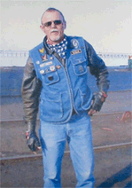
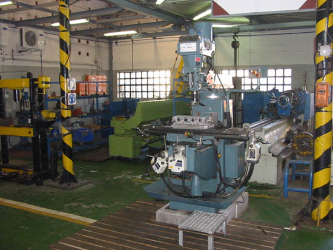

Walvis Bay Marine Engineering: professional marine engineering, ship repair and maintenance, fabrication, fitting, rigging, welding, boiler making and pipe works in Walvis Bay, Namibia.
01 / 08
Walvis Bay · Namibia

 WBMEMarine Engineering · Walvis Bay
WBMEMarine Engineering · Walvis Bay
For a quarter-century, WBME has been the workshop Walvis Bay trusts when the work has to be right. No job too big, no job too small.
Walvis Bay Marine Engineering was established by the late Mr. Uwe Crüys in 1999 and registered in October 2000. From his example of never turning away anyone in need came the ethic that still runs every job we take on.
We esteem the customer, the person and the relationship, and we take pride in the small things.

WBME delivers a comprehensive range of ship repair, maintenance and metal-work services from Walvis Bay, with capability that extends well beyond any single specialisation.
General rigging for propeller shafts, rudder shafts, engines, alternators, generators, compressors, pumps and motors.
Strip, overhaul, repair, new parts, re-assembly and installation for ship repair and maintenance work.
General steel structural works, including renewal, modification, complete new builds, design, templates and material preparation.
Profile cutting, rolling, bending, manufacture and installation of marine and industrial steel structures.
Renewal, modification and complete new pipe works, including design, jigs and preparation of all materials.
Gas welding, brazing, silver soldering, MIG, TIG and arc welding across marine and metal-work projects.
Recent jobs, repairs and news, straight from the WBME Facebook page.
Guided by the motto "No job too big, and no job too small," WBME approaches every project with dedication, professionalism and attention to detail.
High standards of workmanship with solutions focused on quality, efficiency and cost-effectiveness.
A team of skilled professionals supported by professional engineers and consultants.
Over 25 years of experience serving the local marine industry from Walvis Bay.
Customer relationships matter, with every project handled through commitment and practical follow-through.
WBME serves the local marine industry while continuously expanding into new sectors. Wherever the work calls for metal-engineering skill, we have the resources to deliver.
With proven metal-engineering expertise, WBME delivers reliable solutions focused on safety, quality, efficiency and cost-effectiveness, ensuring every project is completed to a high standard.
When a vessel is in dock or a plant component fails, buyers need straight answers. WBME brings a wide service range, historical knowledge and practical metal-work capability to marine and industrial jobs.

Dry-dock repair work
›